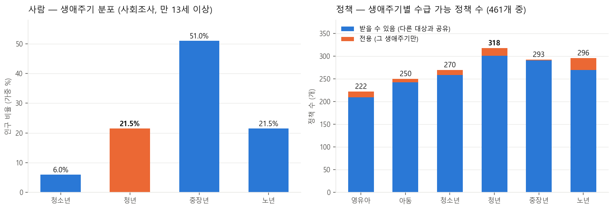
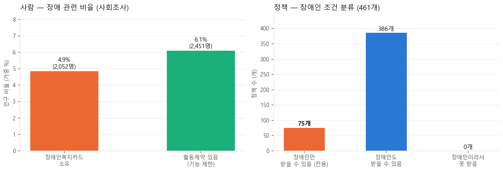
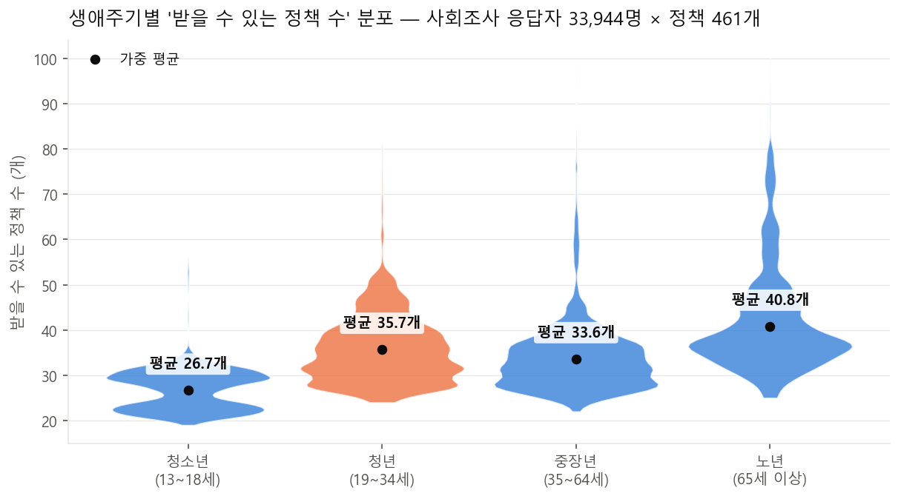
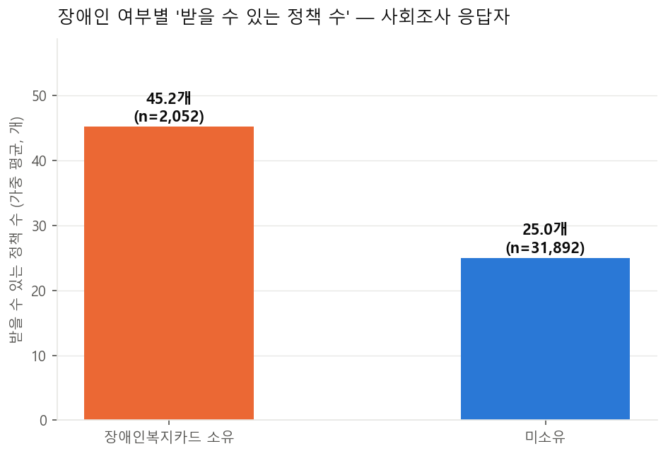
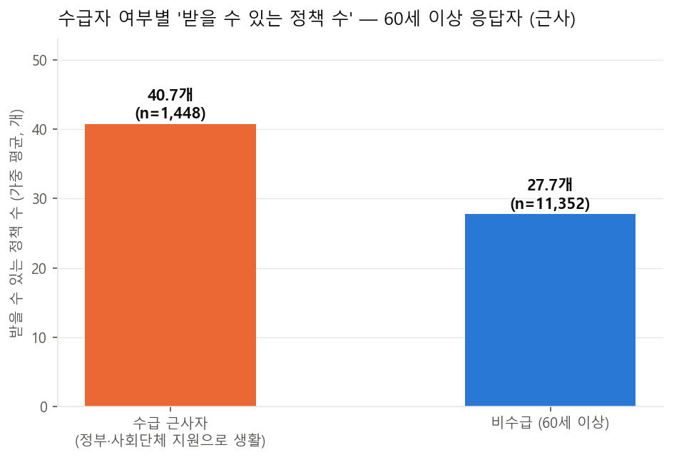

데이터 구성과 공통 변수 체계
세 데이터(가계동향조사·사회조사·중앙부처 복지서비스)를 19개 공통 개념 축으로 정렬해 "사람의 속성"과 "정책의 조건"이 같은 척도 위에서 자동 매칭되도록 설계했다.
1. 사용 데이터 요약
| 항목 | 가계동향조사 2025 | 사회조사 2025 | 중앙부처 복지서비스 |
|---|---|---|---|
| 출처 | 통계청 MDIS | 통계청 MDIS | 복지로(bokjiro.go.kr) |
| 단위 | 가구 | 개인(만 13세+) | 서비스(정책) |
| 규모 | 13,524가구 | 33,944명 / 18,467가구 | 461개 |
| 전체 변수 | 243개 (유효 약 40) | 337개 (유효 33) | 27개 → 변수화 52개 |
| 핵심 변수 | 가구원 관계·연령, 소득분위·구간, 점유형태 | 연령·성별·혼인, 장애인복지카드, 시도, 가구소득, 경제활동 | 지원대상 상세·선정기준(텍스트), 태그, 지원형태 |
| 주요 정보 | 가구 구성(한부모·조손·다자녀)·자녀 연령·정밀 소득 | 장애·지역(시도)·국적·취업 — 자격 판정의 본체 | 정책별 수급 조건 → 40개 변수로 인코딩(커버 85%) |
2. 핵심 공통 변수 5개 — 양쪽 생성 기준
| 변수 | 사회조사(사람) 생성 기준 | 정책 데이터 생성 기준 |
|---|---|---|
| 연령 | 만연령 원변수 (13~105세) | 텍스트에서 "만 X세 이상/이하", "X~Y세" 파싱 → 최소·최대연령. 없으면 생애주기 태그 변환, 역전 17건 무효화 |
| 장애인 | 장애인복지카드 소유(=1) + 활동제약 6문항 보조 | 서비스명 '장애' 포함 ∪ 지원대상 태그 단독 → 2(전용), 그 외 1 |
| 중위소득% | 가구소득구간 중간값 ÷ 가구원수별 기준중위소득 ×100 | 텍스트 "중위소득 X%" 추출, 복수 값은 최댓값(관대 필터) |
| 취업여부 | 지난 1주간 경제활동(=1) + 종사상지위 세분 | 재직자·근로자 요구→2, 구직·실업 요구→0, 병기→1 (소득 산정 표현 오탐 제거) |
| 거주지역 | 행정구역 시도코드(17개) + 동부/읍면부 | 시도명·지역유형 탐지 → 0 전국(430) / 1 차등·특례(25) / 2 전용(6) + 상세 |
3. 공통 변수 19개 축
각 변수의 정의·코딩·사회조사/정책 측 생성 규칙·매칭식은 공통 변수 상세 설명에 변수별로 상세 기록되어 있다.
완전 대응 13개: 연령 하한·상한, 생애주기, 성별, 장애인, 소득수준(중위소득%), 거주지역, 취업, 학생, 자영업, 1인가구, 농어업, 자녀 유무
근사 대응 6개: 수급자·차상위(60세+ 생활비마련 근사), 한부모, 조손, 다문화(외국국적), 자녀 연령대(청소년만), 군인·질병(직업군인·활동제약 근사)
대응 불가 6개 → 앱 직접 입력: 보훈대상자, 탈북민, 보호종료, 위기상황, 재산, 기관판정
4. 대표 변수 EDA — 사람 분포 vs 정책 조건
인구의 21.5%인 청년에게 461개 중 318개 정책이 열려 있고(전용 17), 인구의 4.9%인 등록장애인에게 75개(16%)가 전용 배정되어 있다.


5. 받을 수 있는 정책 수 — 규칙 엔진 매칭 결과 분석
사회조사 응답자 33,944명 각각에 대해 규칙 엔진이 461개 정책의 자격을 판정한 뒤, 자격이 확정(1)된 정책 수를 세었다 (판정 불가·NaN은 제외한 보수적 집계). 전체 가중 평균은 35.2개(중앙값 34개)로, 한 사람이 조건상 받을 수 있는 중앙부처 정책이 평균 35개 안팎임을 뜻한다.
5-1. 생애주기별 분포 (violin plot)
노년이 평균 40.8개로 가장 많고 청년 35.7개, 중장년 33.6개, 청소년 26.7개 순이다. 노년층은 연령 요건(60·65세 이상) 정책과 돌봄·의료 정책이 중첩되어 분포가 넓고, 청년은 취업·주거·금융 정책이 집중되어 중장년보다 평균이 높다. 청소년은 본인 명의로 신청 가능한 정책이 적어 가장 낮다. 바이올린의 폭은 해당 정책 수를 가진 사람의 상대적 밀도이며, 검은 점은 표본가중치를 적용한 평균이다.

5-2. 생애주기별 대표 정책
각 생애주기가 실제로 자격을 갖는 정책 중, 다른 생애주기보다 자격률이 뚜렷하게 높은(5%p 이상) 정책을 자격률 순으로 정리했다. 괄호 안은 해당 생애주기의 가중 자격률이다. 전 국민 대상 정책(어느 생애주기에서나 자격률이 같은 정책)은 생애주기 간 차이가 없어 자동으로 제외된다. 판정 신뢰도를 위해 사회조사 변수만으로 완전 판정되는 Tier A 정책 95개 중 본인 자격 기준 정책만 대상으로 했다.
| 순위 | 청소년 | 청년 | 중장년 | 노년 |
|---|---|---|---|---|
| 1위 | 청소년복지시설 운영 지원 (100%) | 고졸자 후속관리 지원모델 개발사업 (100%) | 직장인 든든한 점심밥 (75%) | 인플루엔자 국가예방접종 지원사업 (100%) |
| 2위 | 지역사회 청소년통합지원체계(청소년안전망) (100%) | 경계선지능청년지원 사업 (100%) | 대지급금 (75%) | 노인장기요양보험 복지용구 급여 (100%) |
| 3위 | 청소년상담1388 전화상담 (100%) | 전문기술인재장학금 (21%) | 생활안정자금(융자)(이차보전) (75%) | 중앙노인돌봄지원기관 운영지원 (100%) |
| 4위 | 청소년동반자프로그램 운영 (100%) | 인문100년장학금 (21%) | 체불 근로자 생계비 융자 (75%) | 취약지역 어르신 문화누림 (100%) |
| 5위 | 청소년상담1388 온라인상담 (100%) | 공공산림가꾸기 (14%) | 주택담보노후연금보증 (100%) |
청소년은 성평등가족부의 청소년 상담·복지시설·안전망 정책이, 노년은 예방접종·장기요양·돌봄과 주택연금이 대표적이다. 청년은 학업·취업 이행기를 지원하는 교육부·고용노동부 정책이, 중장년은 임금체불·퇴직 관련 근로자 보호 정책이 특징적으로 나타난다. 중장년은 조건이 취업 여부에 걸려 있어 자격률이 74.8%로 다른 생애주기와의 격차(9.9%p)가 상대적으로 작다.
5-3. 장애인이 받을 수 있는 정책 수
장애인복지카드 소유자는 평균 63.3개, 미소유자는 33.8개로 29.5개 차이가 난다. 차이의 대부분은 장애인 전용 정책 75개에서 발생하며(전용 정책 중 소유자 평균 자격 26.8개), 나머지 일반 정책에서는 두 집단의 자격 수가 비슷하다 — 장애가 다른 정책의 배제 사유가 아니기 때문이다. 즉 등록장애인은 "일반 정책 + 전용 정책"의 이중 자격 구조를 갖는다.

5-4. 수급자가 받을 수 있는 정책 수 (60세 이상, 근사)
사회조사에는 수급 자격 문항이 없어 60세 이상에게만 조사된 '생활비 마련방법 = 정부·사회단체 지원'을 수급자 근사치로 썼다 (n=1,448). 수급 근사자는 평균 54.8개, 같은 연령대 비수급자는 37.9개로 16.9개 차이다. 수급자 자격을 요구하는 정책 99개 중 근사자의 확정 자격은 평균 13.1개에 그치는데, 이는 소득인정액·재산 등 사회조사로 판정할 수 없는 조건이 평균 49.4개 정책에서 NaN(불명)으로 남기 때문이다. 따라서 이 수치는 하한선이며, 앱에서 수급 여부를 직접 입력받으면 확정 정책 수는 크게 늘어난다.

집계 기준: 자격=1인 정책만 계산(NaN 제외), 가구원가중값 적용 평균. 표 원본은 분석/Result/키변수_차트/표5~8.